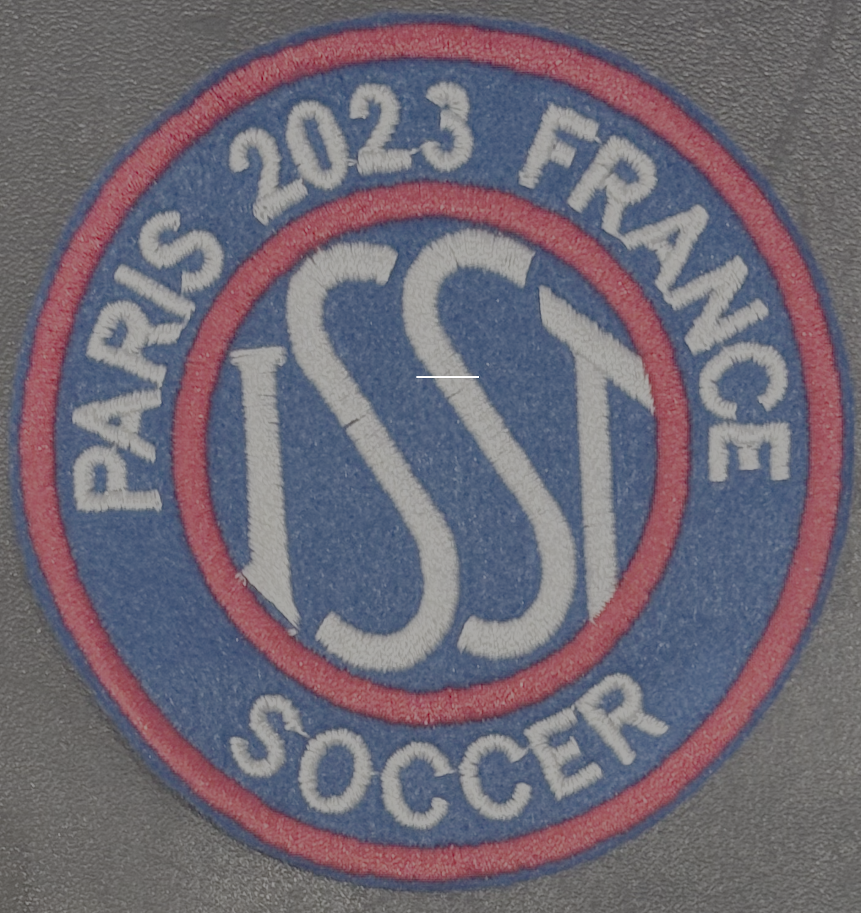

I consider myself to be a sports enthusiast also. Ever since the age of six,
I have been playing soccer and basketball. Over the years, I have really come to like these sports
as they have not only helped me to stay in shape but also taught me valuable lessons both on and off the playing field.
At first, I didn’t quite like these sports, as they involved a lot of running and conditioning, two things I disliked
during practices. However, as time progressed and my love for these sports grew, I learned that doing conditioning and
cardio were crucial in becoming a good player. Thus, I started to approach these things with a different mindset and
dedicated specific time to soccer and basketball each week. Now, I appreciate these sports not only for the recreation
they provide but also for the life skills they have taught me, such as the importance of reflecting on my weaknesses
and persevering through hard times. Furthermore, over time,
these sports have helped to foster a sense of leadership within me as well as the importance of responsibility and dedication.
Soccer
At the end of each sports season at ASH, selected teams participate in the International Schools Sport Tournament.
In this tournament, the eight particpating teams (including ASH) are split up into two groups, playing each other
to qualify for the semi-finals and eventually the finals. I have participated in this tournament twice: once in
Paris, France, and recently in Vienna, Austria.
The following is a participating award from the ISST hosted in Paris. According to the referees and fellow teams,
our team displayed the best sportsmanship throughout the tournament.

In the most recent ISST I participated in, my team and I were awarded second place after a disappointing
loss in the finals game. However, I am proud of myself and the team for reaching that far and striving to
win the tournament. The following is my finalist badge, second place medal, and team photo.
Basketball
Currently, I play basketball for one of the largest clubs in the Netherlands, BS Leiden. Below are some
pictures of me and my team.